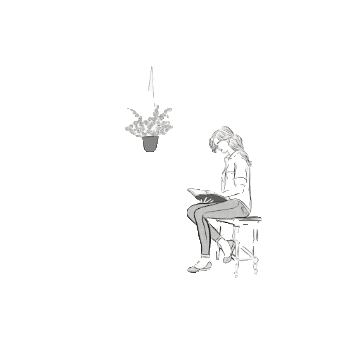

Навигация по сайту
🏠 Главная страница
📚 Библиотечные ресурсы
📜 Структура. Формирование.
Распространение
«Библиотекари были страшнее ассасинов. Эти люди постоянно читали, и в их головах беспрестанно бродили мысли и рождались идеи. А идеи, как известно, – самое опасное оружие.» Сара Дж. Маас
Российские государственные библиотечные информационные ресурсы
Информационные ресурсы
Российская государственная библиотека
https://www.rsl.ru/
eLibrary
https://elibrary.ru/
Общероссийский математический портал
https://www.mathnet.ru/

© Власова С.Д. 2025